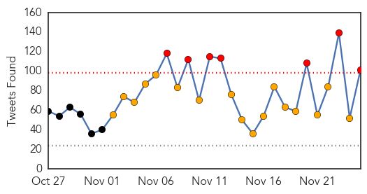
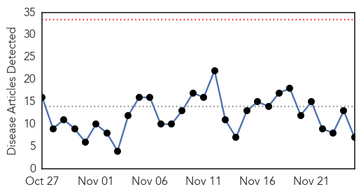
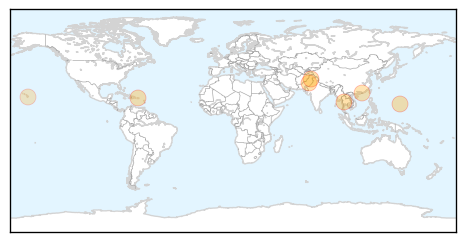

Ebola
30-Day Web Trend
0 alerts, 0 warnings

30-Day Twitter Trend
7 alerts, 10 warnings

Article Locations

Article Confidences

Top Articles:
- 1.000
- Teenage boy dies of Ebola in Liberia; 1st Ebola death since July
- 1.000
- Over 150 contacts quarantined
- 1.000
- Boy dies of Ebola in Liberia
- 1.000
- WHO Ebola Experts Reach Liberia While Ireland Confirms Its Citizen Did Not Die From Ebola Virus
- 1.000
- Are Patients Getting Proper Treatment? Questions Raised As Ann Coulter, Donald Trump Stir Controversy
- 1.000
- Ebola Reaches Ghana, Patient Being Tested As Health Ministry Urges People to 'Remain Calm'
- 1.000
- Ebola Pandemic Unlikely, Experts Say, But Other Threats Loom
- 1.000
- Vacations, Vaccines And Very Expensive Monkeys
- 1.000
- Teen dies of Ebola in Liberia
- 1.000
- Boy dies of Ebola in Liberia, first fatality in months
- 1.000
- Boy dies of Ebola in Liberia, first fatality in months
- 1.000
- Two Dead, Hundreds Quarantined
- 1.000
- Puzzling Ebola Death Shows How Little We Know About The Virus
- 1.000
- Following Death Of 15-Year Boy From Ebola, Several Health Workers
- 1.000
- Puzzling Ebola Death Shows How Little We Know About The Virus
- 0.999
- Liberia records 1st Ebola death since July
- 0.999
- Liberia Suffers New Ebola Death, Despite Being 'Ebola-Free'
- 0.999
- Ten-year-old being treated for case of Ebola in Liberia
- 0.999
- 15-year-old Liberian boy dies from Ebola in fresh outbreak
- 0.999
- US States, Army Stand Firm On Ebola Quarantine Despite CDC's New Guidelines
- 0.999
- UN Health Agency Denies Evacuation Request For Sierra Leone Ebola Doctor
- 0.999
- President Cancels Campaign Stops To Discuss Outbreak
- 0.999
- Ebola Survivor Nancy Writebol Gives Blood To New York Ebola Patient Craig Spencer
- 0.999
- World Health Organization Says Death Toll Hits 2,400 In West Africa
- 0.999
- Ebola Outbreak 2014: 21-Day Quarantine May Not Suffice, Study Suggests
- 0.999
- Australia To Deny Entry To Residents Of Ebola-Affected West African Nations
- 0.999
- Ebola is back and kid dies!
- 0.999
- Probe of Liberia Ebola cluster hints at prior infection in mom
- 0.999
- Fears in Liberia after new Ebola death
- 0.999
- Boy dies of Ebola in Liberia, first such fatality in months
- 0.999
- The Liberian Observer
- 0.999
- Boy dies of latest Ebola outbreak in Liberia
- 0.998
- US Will Send Troops To Liberia To Combat 'Potential Threat To Global Security'
- 0.998
- Swiss Agency To Conduct Trial For Experimental Treatment On 120 Volunteers
- 0.998
- Ebola Outbreak 2014: Sierra Leone Begins 3-Day Lockdown, Experts Fear Backlash
- 0.998
- Possible Ebola Patient Rushed To Maryland Hospital For Testing
- 0.998
- Ebola Crisis: Liberia Boy Dies after Fresh Cases - Crossmap Christian News
- 0.998
- Ebola Claims a 15-year-old Boy’s Life in Liberia : Physical Wellness : Counsel & Heal
- 0.998
- Advanced Ebola Is Riskiest Stage for Caregivers, Study Shows
- 0.997
- Ebola In Russia? 2 African Students Hospitalized For Ebola Tests After Showing Symptoms
- 0.995
- US Ambassador To The UN Samantha Power Travels To West Africa In The Wake Of Ebola Quarantine Moves By 3 States
- 0.995
- Ebola Vaccine: First-Ever Human Trials For Experimental Drug To Begin Soon
- 0.995
- Liberia, Sierra Leone and Guinea Hit by Lack of Doctors and Aid
- 0.994
- Journalists Find Hazmat Suits A Hindrance In Hot Zone
- 0.993
- US Ambassador Travels To West Africa As Ebola Quarantine Moves Take Hold
- 0.993
- NYC Ebola Patient Craig Spencer's Symptoms Worsen During 'More Serious' Phase
- 0.991
- Australia Announces $6.35M More To Fight Ebola As UN Says Over $1B Needed To Counter Outbreak
- 0.990
- Louisiana Asks Ebola Doctors Not To Come To New Orleans Conference
- 0.990
- China awards model Ebola fighters - Xinhua
- 0.989
- Ebola In Texas: Austin Nurse Self-Quarantines After Returning From West Africa
Showing top 50 articles...
Top Tweets:
- 0.999
- World Health Organization condemned over response to Ebola outbreak - https://t.co/i0yzz8Om6O ebola
- 0.997
- Liberia: Icyorezo cya Ebola Cyongeye Kugaragara - https://t.co/Okg8LtIZMD ebola
- 0.995
- Renewed Ebola Outbreak - https://t.co/N1sZEeFQ7x ebola
- 0.994
- Ebola: Niño muere en Liberia meses tras ser declarados 'libres del virus' https://t.co/SfqL99oE9N
- 0.993
- Sierra Leone is celebrating: Bye Bye Ebola! - https://t.co/s4Fjx11sF7 ebola
- 0.993
- Liberia Suffers New Ebola Death, Despite Being 'Ebola-Free' - https://t.co/NuQseJO2DL ebola
- 0.993
- 'Superballs' can block infection by Ebola virus - https://t.co/nanPeWhiky ebola
- 0.991
- Dispatches From Sierra Leone: Ebola's Bittersweet Legacy - https://t.co/XYY0AkyERA ebola
- 0.989
- Liberian boy, 15, falls victim to Ebola virus - https://t.co/4cEAvzqTl0 ebola
- 0.989
- Ebola - Nothing Will Change - 2009 - https://t.co/hbzR0rtwa6 ebola
- 0.986
- Liberia Gets Hit With More Ebola Cases - https://t.co/FFLbCRXRae ebola
- 0.984
- 1st Ebola death in Liberia since WHO declares country virus-free Sept - https://t.co/wyjKSHEZGV ebola
- 0.983
- Teenage boy dies from Ebola in 'virus-free' Liberia - https://t.co/8rsXthwevz ebola
- 0.983
- Liberia has first Ebola death since being deemed free of the disease in September - https://t.co/jbj4HKDvLp ebola
- 0.982
- Liberia Has First Ebola Fatality in Months as Outbreak Crops Back Up - https://t.co/57MMnNTokz ebola
- 0.980
- New Ebola case in Liberia after country declared Ebola-free - https://t.co/tRYsaKmmIA ebola
- 0.980
- Ebola: Hidden reservoirs - https://t.co/LEgWOKUZjD ebola
- 0.980
- Ebola: Hidden reservoirs - https://t.co/D340eMvYIp ebola
- 0.978
- Liberia Backslides in Ebola Fight; Records First Death Since Being Declared Virus-Free - https://t.co/H3Z1PPCprt ebola
- 0.978
- As 2nd anniversary nears of Ebola breakout in West Africa, nurse provides ... - Science Codex https://t.co/FKLFvegynG ebola EVD
- 0.976
- New Ebola Cases Demand - https://t.co/bwW7fxx8AD ebola
- 0.976
- Liberia records new Ebola death as virus re-emerge... - https://t.co/M52jgCxK0X ebola
- 0.976
- Ebola in Liberia: Over 150 contacts quarantined - https://t.co/XYpkgD16za ebola
- 0.976
- Ebola Experience Leaves World No Less Vulnerable - https://t.co/LhmD5U5nnT ebola
- 0.975
- ExxonMobils (XOM) Return to Liberia Dispels Ebola Threat - https://t.co/eAS8WxRWX6 ebola
- 0.974
- Liberia reports death of boy in family Ebola cluster - https://t.co/dgTkOuEw9Y ebola
- 0.974
- Feasibility of Xpert Ebola Assay in Médecins Sans Frontières Ebola Program, Guinea - https://t.co/274powCZfH ebola
- 0.974
- BREAKING EBOLA KILLS teenager TODAY! hundreds quarantined exposed to Ebola bodily fluids https://t.co/vBbeQKC50z happythanksgiving Ebola
- 0.973
- Liberia confirms boy dies of Ebola, first fatality in months - https://t.co/pYDOfdQvdU ebola
- 0.973
- Ebola kills teenager today West African boy dies from Ebola hundreds are now quarantined https://t.co/vBbeQKC50z
- 0.973
- Ebola kills teenager today West African boy dies from Ebola hundreds are now quarantined https://t.co/vBbeQKC50z
- 0.972
- Liberia Records First Ebola Death Since July - https://t.co/voKxOwKxyf ebola
- 0.971
- Sierra Leone: Post-Ebola assistance to the vulnerable underway - https://t.co/cbjIlbWK6d ebola
- 0.971
- 'Superballs' can block infection by Ebola virus - Royal Society of Chemistry https://t.co/TQYtByqUgJ ebola EVD
- 0.970
- Puzzling Ebola Death Shows How Little We Know About The Virus - https://t.co/oce85ZxiWu ebola
- 0.970
- Puzzling Ebola Death Shows How Little We Know About The Virus - https://t.co/LaTu0OyvVF ebola
- 0.965
- RT: Guinea had least number of cases of Ebola but lost about 67% of them. 28% & 45% died in Sierra Leone & Liberia resp. https:…
- 0.965
- As second anniversary nears of Ebola breakout in West Africa, nurse provides firsthand account of ... - https://t.co/Y05UEC7ZRI ebola
- 0.963
- Teenaged Boy Dies of Ebola in Liberia - https://t.co/dDMgfFtaf5 ebola
- 0.963
- Ebola virus - what you need to know - https://t.co/3GY5w0SbKA ebola
- 0.960
- Boy, 15, dies of Ebola in Liberia - https://t.co/NHwur0BvYR ebola
- 0.959
- New Ebola Patient Dies - https://t.co/PZgEfDwYcr ebola
- 0.959
- Ebola Returns to Liberia: Two Dead, Hundreds Under Surveillance - https://t.co/PgyjQ08hWp ebola
- 0.958
- Boy dies of Ebola in Liberia, first such fatality in months - https://t.co/NTlPBBuwRC ebola
- 0.958
- Boy dies of Ebola in Liberia, first such fatality in months - https://t.co/FYx11wo2tM ebola
- 0.958
- Boy dies of Ebola in Liberia, first such fatality in months - https://t.co/2Ly5YFVrzY ebola
- 0.956
- Ebola Returns to Liberia: Two Dead, Hundreds Under Surveillance - Breitbart News https://t.co/iBgbBtIK54 ebola EVD
- 0.955
- New Ebola Outbreak Could Explode In Liberia…And Here - https://t.co/7TYBGpYrlt ebola
- 0.955
- Liberia Backslides in Ebola Fight; Records First Death Since Being Declared - https://t.co/CHKiwFfuRA ebola
- 0.953
- Teenager Dies of Ebola in Liberia - https://t.co/lmBgHHuYER ebola
Showing top 50 tweets...
Dengue Fever
30-Day Web Trend
0 alerts, 0 warnings

30-Day Twitter Trend
3 alerts, 0 warnings

Article Locations
Article Confidences
Top Articles:
- 0.977
- Confirmed dengue fever deaths increase to 174, reports agency
- 0.964
- ‘Dengue under control’
- 0.947
- Effective steps bring dengue deaths to zero in KP so far
- 0.931
- U.S. Army awards Upstate Medical grant of up to $12 million to develop dengue-virus vaccine
- 0.927
- Dengue scare having little impact on tourism — so far
- 0.896
- Deadly bird flu virus found in France could impact foie gras industry
- 0.700
- CDC official to visit Big Island
Top Tweets:
- 0.548
- Flavivirus news: Ha Noi reports fall in dengue fever cases - Viet Nam News: Viet Nam NewsHa Noi... https://t.co/7GuGxwM5bf pathogenposse